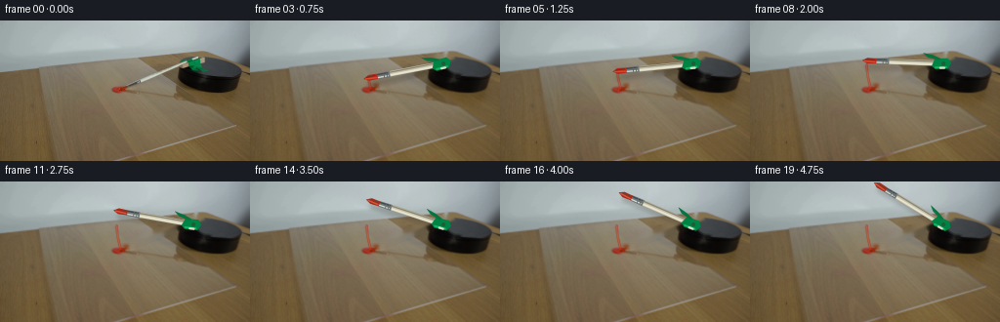
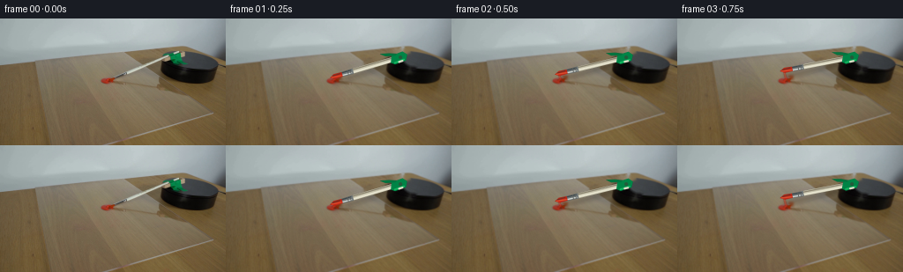
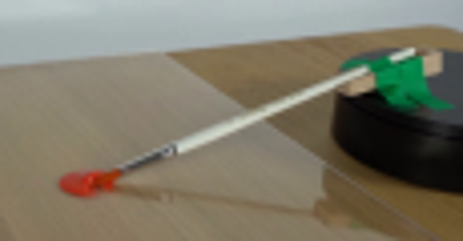
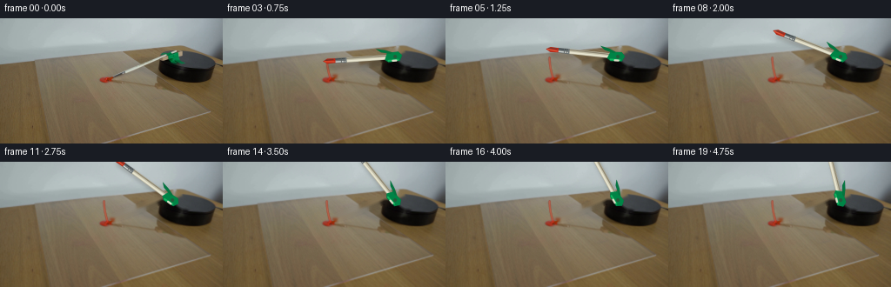
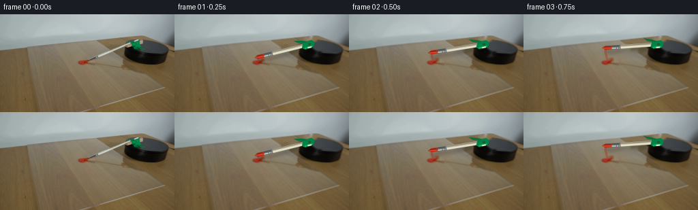

CODING AGENTS AS PIXEL WORLD MODELS
traex/GPT-5.6-Sol · 0130
点击播放 · 原生 RGB 像素
逐轮保存的候选
回放视频、检查图与代码变化。
每份候选均可单独播放。实际图片检查记录在下方工具轨迹中。
候选 01播放与检查图
点击播放 · 原生 RGB 像素

展开代码变化
--- 上一保存版本
+++ 本次保存版本
@@ -0,0 +1,123 @@
+from pathlib import Path
+import math
+import cv2
+import numpy as np
+from PIL import Image
+import artifact_io
+
+CASE = Path(__file__).resolve().parent
+src = np.array(Image.open(CASE / 'first_frame.png').convert('RGB'), dtype=np.uint8)
+H, W = src.shape[:2]
+
+# Reconstruct the little strip of scene covered by the arm in frame zero. The
+# narrow mask lets OpenCV interpolate the existing wood/acrylic/platform texture.
+bgr = cv2.cvtColor(src, cv2.COLOR_RGB2BGR)
+mask = np.zeros((H,W), np.uint8)
+cv2.line(mask, (126,66), (201,37), 255, 8, cv2.LINE_AA)
+cv2.line(mask, (126,66), (137,62), 255, 7, cv2.LINE_AA)
+# green holder and its small white tie
+cv2.fillPoly(mask, [np.array([(182,42),(191,36),(204,35),(210,39),(207,48),
+ (218,54),(209,59),(198,53),(187,51)],np.int32)],255)
+cv2.ellipse(mask,(196,40),(14,6),0,0,360,255,-1)
+# Do not inpaint the paint blob itself.
+yy,xx=np.ogrid[:H,:W]
+mask[((xx-120)/10.5)**2+((yy-71)/5.5)**2 < 1] = 0
+base_bgr = cv2.inpaint(bgr, mask, 3, cv2.INPAINT_TELEA)
+base = cv2.cvtColor(base_bgr, cv2.COLOR_BGR2RGB)
+
+SS=4
+pivot=np.array([198.0,44.0])
+tip0=np.array([120.5,70.5])
+theta0=math.atan2(tip0[1]-pivot[1],tip0[0]-pivot[0])
+
+def P(p): return tuple(np.round(np.asarray(p)*SS).astype(int))
+
+def rot_local(theta, along, across=0.0):
+ # along is measured out from the spindle toward the bristles.
+ u=np.array([math.cos(theta),math.sin(theta)])
+ n=np.array([-u[1],u[0]])
+ return pivot+u*along+n*across
+
+def poly(im, pts, color):
+ cv2.fillPoly(im,[np.array([P(x) for x in pts],np.int32)],color,cv2.LINE_AA)
+
+def line(im,a,b,color,width):
+ cv2.line(im,P(a),P(b),color,max(1,round(width*SS)),cv2.LINE_AA)
+
+def draw_arm(rgb, theta, frame_i):
+ hi=cv2.resize(rgb,(W*SS,H*SS),interpolation=cv2.INTER_CUBIC)
+ # Soft contact shadow: farther from the spindle it falls slightly down-right.
+ sh=np.zeros((H*SS,W*SS,4),np.uint8)
+ a=rot_local(theta,7)+np.array([2.0,4.2])
+ b=rot_local(theta,81)+np.array([4.2,6.2])
+ line(sh,a,b,(35,25,14,50),5.2)
+ sh[:,:,3]=cv2.GaussianBlur(sh[:,:,3],(0,0),2.0*SS)
+ alpha=sh[:,:,3:4].astype(np.float32)/255
+ hi=(hi.astype(np.float32)*(1-alpha)+sh[:,:,:3].astype(np.float32)*alpha).astype(np.uint8)
+
+ lay=np.zeros((H*SS,W*SS,4),np.uint8)
+ # Wooden handle, subtly shaded along both edges.
+ line(lay,rot_local(theta,4),rot_local(theta,58),(198,194,171,255),5.2)
+ line(lay,rot_local(theta,5,-1.25),rot_local(theta,58,-1.25),(231,228,207,255),1.5)
+ line(lay,rot_local(theta,6,1.7),rot_local(theta,58,1.7),(139,132,112,255),1.0)
+ # silver ferrule
+ pts=[rot_local(theta,56,-3.0),rot_local(theta,69,-2.6),
+ rot_local(theta,70,2.5),rot_local(theta,56,2.8)]
+ poly(lay,pts,(111,118,119,255))
+ line(lay,rot_local(theta,58,-1.5),rot_local(theta,69,-1.3),(210,215,210,255),1.0)
+ line(lay,rot_local(theta,58,1.7),rot_local(theta,69,1.6),(61,70,73,255),1.0)
+ # crimp marks
+ for d in (59,62): line(lay,rot_local(theta,d,-2.1),rot_local(theta,d,2.1),(77,84,85,190),.55)
+ # bristles: naturally tapered and still visibly wet red after crossing paint.
+ wet=max(0.35,1-frame_i/25)
+ br=(int(145+52*wet),int(47-10*wet),int(26-5*wet),255)
+ pts=[rot_local(theta,69,-2.4),rot_local(theta,78,-2.8),rot_local(theta,83,0),
+ rot_local(theta,78,2.8),rot_local(theta,69,2.4)]
+ poly(lay,pts,br)
+ line(lay,rot_local(theta,70,-1.1),rot_local(theta,81,-.2),(229,72,38,220),.9)
+ line(lay,rot_local(theta,71,1.5),rot_local(theta,80,1.1),(112,28,20,210),.7)
+ # Green taped clamp wrapped over the arm at the spindle.
+ pts=[rot_local(theta,-5,-5),rot_local(theta,8,-6),rot_local(theta,12,-3),
+ rot_local(theta,9,4.5),rot_local(theta,-4,5.5),rot_local(theta,-8,1)]
+ poly(lay,pts,(0,132,70,255))
+ line(lay,rot_local(theta,-3,-3.6),rot_local(theta,8,-4.2),(19,183,95,255),1.5)
+ # folded tape tail
+ pts=[rot_local(theta,5,3.5),rot_local(theta,16,6),rot_local(theta,21,10),
+ rot_local(theta,11,8),rot_local(theta,3,5)]
+ poly(lay,pts,(0,116,62,245))
+ # bright fastening band at center
+ line(lay,rot_local(theta,-1,-4.5),rot_local(theta,3,-4.5),(220,221,199,255),2.0)
+ # tiny spindle cap
+ cv2.circle(lay,P(pivot),round(2.0*SS),(34,91,58,255),-1,cv2.LINE_AA)
+ a=lay[:,:,3:4].astype(np.float32)/255
+ hi=(hi.astype(np.float32)*(1-a)+lay[:,:,:3].astype(np.float32)*a).astype(np.uint8)
+ return cv2.resize(hi,(W,H),interpolation=cv2.INTER_AREA)
+
+def add_paint_trace(im, angle):
+ # A short irregular arc left where the loaded bristles pull through the dollop.
+ # It is deliberately subtle; only the first ~20 degrees touch the acrylic paint.
+ if angle <= 0: return im
+ hi=cv2.resize(im,(W*SS,H*SS),interpolation=cv2.INTER_CUBIC)
+ ov=np.zeros((H*SS,W*SS,4),np.uint8)
+ maxang=min(angle,math.radians(18))
+ pts=[]
+ for q in np.linspace(0,maxang,24):
+ t=theta0+q
+ pts.append(P(rot_local(t,78.5)))
+ if len(pts)>1:
+ cv2.polylines(ov,[np.array(pts,np.int32)],False,(178,40,24,175),round(2.1*SS),cv2.LINE_AA)
+ cv2.polylines(ov,[np.array(pts,np.int32)],False,(225,63,35,115),round(.7*SS),cv2.LINE_AA)
+ a=ov[:,:,3:4].astype(np.float32)/255
+ hi=(hi.astype(np.float32)*(1-a)+ov[:,:,:3].astype(np.float32)*a).astype(np.uint8)
+ return cv2.resize(hi,(W,H),interpolation=cv2.INTER_AREA)
+
+frames=[src.copy()]
+# One smooth, constant-rate clockwise sweep. In image coordinates increasing
+# angle is clockwise. The brush begins loaded in the dollop and visibly moves past it.
+for i in range(1,20):
+ ang=math.radians(95.0)*i/19.0
+ bg=add_paint_trace(base.copy(),ang)
+ frames.append(draw_arm(bg,theta0+ang,i))
+frames=np.stack(frames).astype(np.uint8)
+assert np.array_equal(frames[0],src)
+artifact_io.save(frames,CASE)
候选 02播放与检查图
点击播放 · 原生 RGB 像素


展开代码变化
--- 上一保存版本
+++ 本次保存版本
@@ -115,7 +115,7 @@
# One smooth, constant-rate clockwise sweep. In image coordinates increasing
# angle is clockwise. The brush begins loaded in the dollop and visibly moves past it.
for i in range(1,20):
- ang=math.radians(95.0)*i/19.0
+ ang=math.radians(50.0)*i/19.0
bg=add_paint_trace(base.copy(),ang)
frames.append(draw_arm(bg,theta0+ang,i))
frames=np.stack(frames).astype(np.uint8)
可观测工具轨迹
实际执行的命令与返回图片。
命令 1exit 0
/bin/bash -lc "cat GENERATION_RULES.md && printf '\\n---PROMPT---\\n' && cat prompt.txt"
命令 2exit 1
/bin/bash -lc "find . -maxdepth 2 -type f -printf '%p\\n' | sort && printf '\\nTOOLS\\n' && command -v ffmpeg && command -v python3"
命令 3exit 0
/bin/bash -lc "python3 - <<'PY'
import importlib.util
for x in ['cv2','PIL','numpy','scipy','imageio']:
print(x, bool(importlib.util.find_spec(x)))
from PIL import Image
im=Image.open('first_frame.png'); print(im.mode, im.size)
PY"命令 4exit 0
/bin/bash -lc "python3 - <<'PY'
from PIL import Image
im=Image.open('first_frame.png')
im.crop((100,25,215,85)).resize((920,480)).save('.tmp/crop.png')
PY"命令 5exit 0
/bin/bash -lc 'cat artifact_io.py'
命令 6exit 0
/bin/bash -lc "python3 - <<'PY' import cv2,numpy as np src=np.float32([[0,0],[1,0],[1,1],[0,1]]) dst=np.float32([[40,49],[159,38],[242,108],[120,143]]) H=cv2.getPerspectiveTransform(src,dst); I=np.linalg.inv(H) for p in [(197,44),(121,71),(130,66),(185,48)]: q=I@np.array([*p,1.]); q/=q[2]; print(p,q[:2]) PY"
命令 7exit 0
/bin/bash -lc "cat > generate.py <<'PY'
from pathlib import Path
import math
import cv2
import numpy as np
from PIL import Image
import artifact_io
CASE = Path(__file__).resolve().parent
src = np.array(Image.open(CASE / 'first_frame.png').convert('RGB'), dtype=np.uint8)
H, W = src.shape[:2]
# Reconstruct the little strip of scene covered by the arm in frame zero. The
# narrow mask lets OpenCV interpolate the existing wood/acrylic/platform texture.
bgr = cv2.cvtColor(src, cv2.COLOR_RGB2BGR)
mask = np.zeros((H,W), np.uint8)
cv2.line(mask, (126,66), (201,37), 255, 8, cv2.LINE_AA)
cv2.line(mask, (126,66), (137,62), 255, 7, cv2.LINE_AA)
# green holder and its small white tie
cv2.fillPoly(mask, [np.array([(182,42),(191,36),(204,35),(210,39),(207,48),
(218,54),(209,59),(198,53),(187,51)],np.int32)],255)
cv2.ellipse(mask,(196,40),(14,6),0,0,360,255,-1)
# Do not inpaint the paint blob itself.
yy,xx=np.ogrid[:H,:W]
mask[((xx-120)/10.5)**2+((yy-71)/5.5)**2 < 1] = 0
base_bgr = cv2.inpaint(bgr, mask, 3, cv2.INPAINT_TELEA)
base = cv2.cvtColor(base_bgr, cv2.COLOR_BGR2RGB)
SS=4
pivot=np.array([198.0,44.0])
tip0=np.array([120.5,70.5])
theta0=math.atan2(tip0[1]-pivot[1],tip0[0]-pivot[0])
def P(p): return tuple(np.round(np.asarray(p)*SS).astype(int))
def rot_local(theta, along, across=0.0):
# along is measured out from the spindle toward the bristles.
u=np.array([math.cos(theta),math.sin(theta)])
n=np.array([-u[1],u[0]])
return pivot+u*along+n*across
def poly(im, pts, color):
cv2.fillPoly(im,[np.array([P(x) for x in pts],np.int32)],color,cv2.LINE_AA)
def line(im,a,b,color,width):
cv2.line(im,P(a),P(b),color,max(1,round(width*SS)),cv2.LINE_AA)
def draw_arm(rgb, theta, frame_i):
hi=cv2.resize(rgb,(W*SS,H*SS),interpolation=cv2.INTER_CUBIC)
# Soft contact shadow: farther from the spindle it falls slightly down-right.
sh=np.zeros((H*SS,W*SS,4),np.uint8)
a=rot_local(theta,7)+np.array([2.0,4.2])
b=rot_local(theta,81)+np.array([4.2,6.2])
line(sh,a,b,(35,25,14,50),5.2)
sh[:,:,3]=cv2.GaussianBlur(sh[:,:,3],(0,0),2.0*SS)
alpha=sh[:,:,3:4].astype(np.float32)/255
hi=(hi.astype(np.float32)*(1-alpha)+sh[:,:,:3].astype(np.float32)*alpha).astype(np.uint8)
lay=np.zeros((H*SS,W*SS,4),np.uint8)
# Wooden handle, subtly shaded along both edges.
line(lay,rot_local(theta,4),rot_local(theta,58),(198,194,171,255),5.2)
line(lay,rot_local(theta,5,-1.25),rot_local(theta,58,-1.25),(231,228,207,255),1.5)
line(lay,rot_local(theta,6,1.7),rot_local(theta,58,1.7),(139,132,112,255),1.0)
# silver ferrule
pts=[rot_local(theta,56,-3.0),rot_local(theta,69,-2.6),
rot_local(theta,70,2.5),rot_local(theta,56,2.8)]
poly(lay,pts,(111,118,119,255))
line(lay,rot_local(theta,58,-1.5),rot_local(theta,69,-1.3),(210,215,210,255),1.0)
line(lay,rot_local(theta,58,1.7),rot_local(theta,69,1.6),(61,70,73,255),1.0)
# crimp marks
for d in (59,62): line(lay,rot_local(theta,d,-2.1),rot_local(theta,d,2.1),(77,84,85,190),.55)
# bristles: naturally tapered and still visibly wet red after crossing paint.
wet=max(0.35,1-frame_i/25)
br=(int(145+52*wet),int(47-10*wet),int(26-5*wet),255)
pts=[rot_local(theta,69,-2.4),rot_local(theta,78,-2.8),rot_local(theta,83,0),
rot_local(theta,78,2.8),rot_local(theta,69,2.4)]
poly(lay,pts,br)
line(lay,rot_local(theta,70,-1.1),rot_local(theta,81,-.2),(229,72,38,220),.9)
line(lay,rot_local(theta,71,1.5),rot_local(theta,80,1.1),(112,28,20,210),.7)
# Green taped clamp wrapped over the arm at the spindle.
pts=[rot_local(theta,-5,-5),rot_local(theta,8,-6),rot_local(theta,12,-3),
rot_local(theta,9,4.5),rot_local(theta,-4,5.5),rot_local(theta,-8,1)]
poly(lay,pts,(0,132,70,255))
line(lay,rot_local(theta,-3,-3.6),rot_local(theta,8,-4.2),(19,183,95,255),1.5)
# folded tape tail
pts=[rot_local(theta,5,3.5),rot_local(theta,16,6),rot_local(theta,21,10),
rot_local(theta,11,8),rot_local(theta,3,5)]
poly(lay,pts,(0,116,62,245))
# bright fastening band at center
line(lay,rot_local(theta,-1,-4.5),rot_local(theta,3,-4.5),(220,221,199,255),2.0)
# tiny spindle cap
cv2.circle(lay,P(pivot),round(2.0*SS),(34,91,58,255),-1,cv2.LINE_AA)
a=lay[:,:,3:4].astype(np.float32)/255
hi=(hi.astype(np.float32)*(1-a)+lay[:,:,:3].astype(np.float32)*a).astype(np.uint8)
return cv2.resize(hi,(W,H),interpolation=cv2.INTER_AREA)
def add_paint_trace(im, angle):
# A short irregular arc left where the loaded bristles pull through the dollop.
# It is deliberately subtle; only the first ~20 degrees touch the acrylic paint.
if angle <= 0: return im
hi=cv2.resize(im,(W*SS,H*SS),interpolation=cv2.INTER_CUBIC)
ov=np.zeros((H*SS,W*SS,4),np.uint8)
maxang=min(angle,math.radians(18))
pts=[]
for q in np.linspace(0,maxang,24):
t=theta0+q
pts.append(P(rot_local(t,78.5)))
if len(pts)>1:
cv2.polylines(ov,[np.array(pts,np.int32)],False,(178,40,24,175),round(2.1*SS),cv2.LINE_AA)
cv2.polylines(ov,[np.array(pts,np.int32)],False,(225,63,35,115),round(.7*SS),cv2.LINE_AA)
a=ov[:,:,3:4].astype(np.float32)/255
hi=(hi.astype(np.float32)*(1-a)+ov[:,:,:3].astype(np.float32)*a).astype(np.uint8)
return cv2.resize(hi,(W,H),interpolation=cv2.INTER_AREA)
frames=[src.copy()]
# One smooth, constant-rate clockwise sweep. In image coordinates increasing
# angle is clockwise. The brush begins loaded in the dollop and visibly moves past it.
for i in range(1,20):
ang=math.radians(95.0)*i/19.0
bg=add_paint_trace(base.copy(),ang)
frames.append(draw_arm(bg,theta0+ang,i))
frames=np.stack(frames).astype(np.uint8)
assert np.array_equal(frames[0],src)
artifact_io.save(frames,CASE)
PY
python3 generate.py"命令 8exit 0
/bin/bash -lc "python3 - <<'PY'
p='generate.py'
s=open(p).read().replace('math.radians(95.0)*i/19.0','math.radians(50.0)*i/19.0')
open(p,'w').write(s)
PY
python3 generate.py
python3 - <<'PY'
import numpy as np
from PIL import Image
z=np.load('pixels.npz')['pixels']
a=np.array(Image.open('first_frame.png'))
first=np.stack([(z[:,:,0]>>16)&255,(z[:,:,0]>>8)&255,z[:,:,0]&255],axis=-1).astype('uint8')
print('pixels',z.shape,z.dtype,'first_equal',np.array_equal(a,first),'frames',len(list(__import__('pathlib').Path('frames').glob('*.png'))))
PY"视觉工具实际返回图片 1

视觉工具实际返回图片 2

视觉工具实际返回图片 3

视觉工具实际返回图片 4

视觉工具实际返回图片 5

保存候选 2 份；完成命令 8 次；可验证图片返回 5 张。原始 API 响应与完整日志保留在本地。